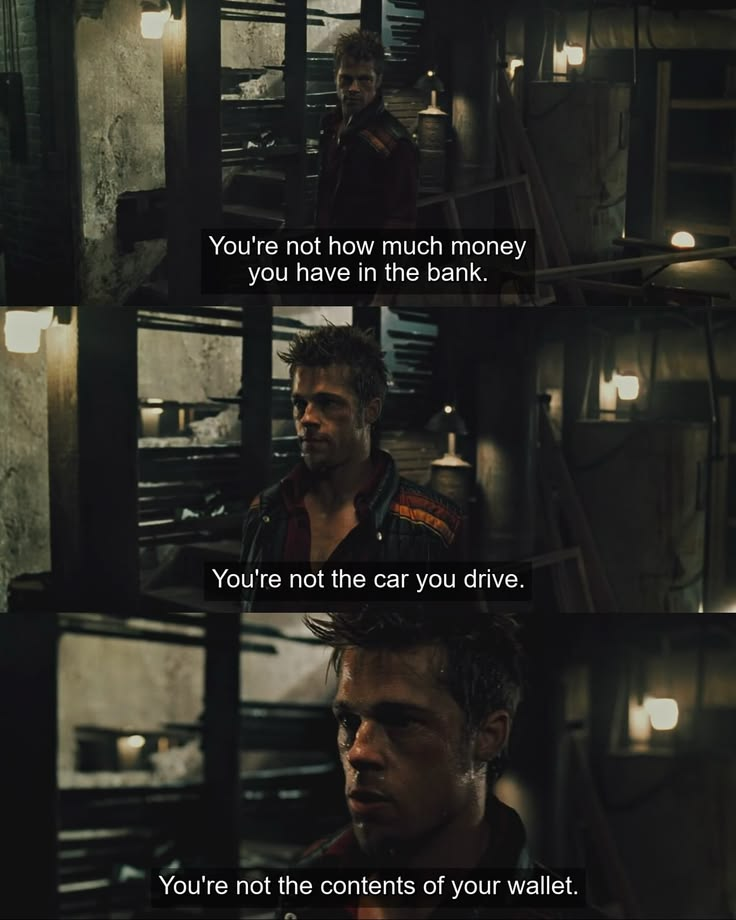
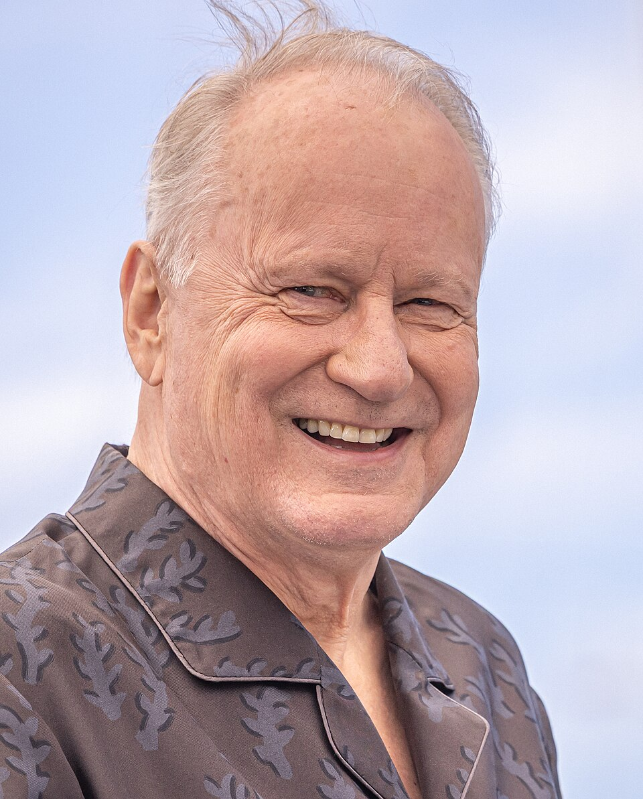
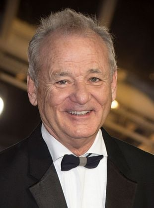
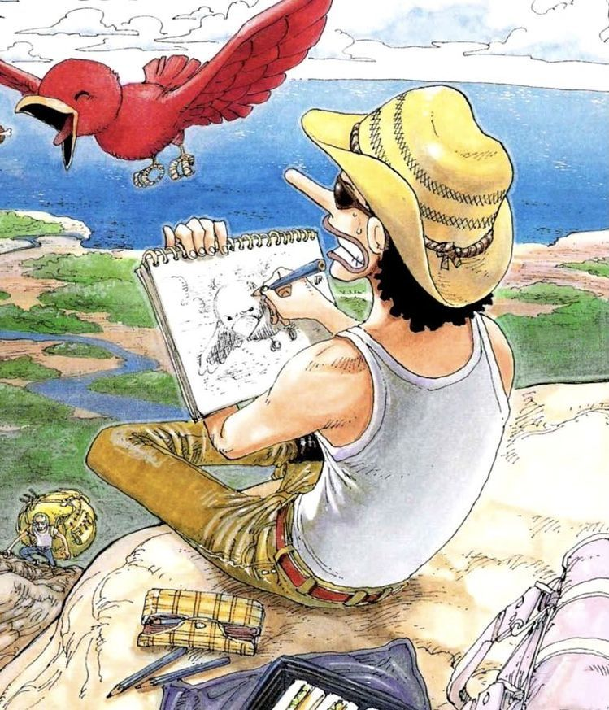
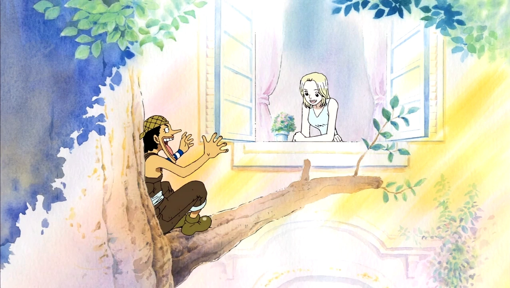

Tendrás una básica idea de ello, pero he estado como loco pensando en qué teléfono comprarme. Se me había olvidado esta experiencia desagradable: tener que hojear videos de reviews de los teléfonos en YouTube, videos cortos de indios (me desagrada su acento), y ver discusiones mononeuronales en secciones de comentarios. Al final del día te provoca comprar ladrillos e ir a vivir a la selva, cerca de un río. Sin Internet.
Pero volviéndome más consciente sobre mis acciones, por estar horas pensando qué teléfono compraré - lo cual tiene sentido, pues estaré con él al menos dos años en adelante - me doy cuenta que soy víctima de cada fenómeno social existente: ¿qué opinan los demás del teléfono? ¿Sería más feliz con teléfono totalmente funcional 1 o teléfono totalmente funcional pero más caro 2? ¿Cuál se sentiría más para mí, cuál me complementaría? Y entre más preguntas obsesivas, me doy cuenta que le he dado menos atención a mi alma que a mi próximo teléfono. Soy parte del sistema, de cada idea consumista y del deseo innato de pertenecer a la manada. ¿Qué han sido de los libros y artículos que haya leído sobre los peligros de estos comportamientos? ¿Los habré digerido o los habré hojeado simplemente con el fin de terminarlos?
Cada teléfono es mejor que el anterior. Pero el mundo desde hace rato ya tiene buena tecnología, oye. Las empresas se han quedado sin muchas ideas para el consumidor general y lo único que está salvando ahora mismo es la IA, único avance que puede justificar más precios. No necesitas más memoria, pero si quieres usar la IA local, tendrás que tener el triple de memoria de lo que tienes ahora mismo. Así que compra más. Consume más. No pienses, deja que la IA te resuma el correo de cien palabras que quieres enviar. No respondas a tus amigos. Deja que la IA les diga qué haces ahora mismo. Cada idea es más deprimente que la anterior. Reconozco que te dije que me estaba encantando el cyberpunk, ambos el género como el juego, pero luego de notarme el sufrir de estar pensando en teléfonos y cámaras por horas, he vuelto a la introspección. Reconsiderar quién soy. Pensar pensamientos. Y aunque ya tengo una idea de la conclusión a la que voy a llegar, la cual tú ya sabes como todo el mundo, siento que una cosa es saberla, quizá por ver un reel "educativo" que te dice qué pensar en alrededor de 35 segundos, pero saberlo por tu propia reflexión es otro sentir - por más simple que sea.
Originalmente lo más genial de la tecnología era que te hiciera la vida más fácil, pero en el contexto de mensajes instantáneos, correos, llamadas, compartir tu vida a amigos. Nuestro espacio social era la básica y la media, el espacio de los adultos era reunirse en cualquier lado para compartir la vida. En los 2010s ya luego se vino el avance en cuanto a especificaciones: memoria, almacenamiento, procesadores, velocidad, etcétera. Y de ahora ni hablar. ¿Cuál es el punto de ahora? El objetivo no era, y acá estoy rechazando lo que dije que me gustaba hace tan solo semanas, el hiperavance de la tecnología. No necesitamos anillos inteligentes, mucho menos lentes con cámaras invisibles. Era descubrir qué nos aceleraba como personas. El mercado ahora, con las tecnologías que adoptamos, nos está consumiendo. Somos el nuevo producto. De hace rato, la verdad, sólo que ahora la persona promedio - yo - puede darse cuenta de que somos la carne del nuevo mercado. Nuestra atención y función cognitiva. Antes podía ignorarse, antes se sabía que se vendían nuestros datos y que las redes sociales eran gratis porque el costo era oculto: nuestros gustos, cómo se pueden adaptar los algoritmos para ofrecernos publicidad, nuestro tiempo y espacio. Pero ahora ver su ejecución, hiperacelerada, es imposible de ignorar. Pasamos de saber estas ideas generales, a saber que alrededor de 150 y 200 mil millones de dólares están siendo invertidos al año en ingenieros, algoritmos e investigación directamente relacionada a capturar la máxima atención humana en servicios digitales. Estamos moldeados, estamos arruinados.
En fin. Obsesión. ¿Qué se puede hacer? Luchar contra la corriente en las mismas plataformas es sólo ser parte de ella. Es parte de entrar a Reels y ver cuatro videos yuxtapuestos en secuencia, todos en el formato de chica micrófono sentada hablándote del problema que tienes, con la solución que ella ofrece, mientras se muestra indiferente maquillándose o con un cigarro en la mano:
Es como estar bajo el asecho en cada lugar al que vayamos con una Gloria Steinem alejándonos de la vida real. Es cool fumar, la gente cool lo hace, pero la gente cool también no hace cosas que nos hagan oler la boca, la ropa, el cuerpo y nos ardan los ojos. Dios me tenga piedad si deseo compartir experiencias, pues la gente cool vive el momento - pero la gente cool también toma fotos, toma videos, se graba y los sube a Internet. Ah, ya me acordé de los otros dos reels:

Entrar a las redes sociales es estar 10 minutos dentro y salir con 3 problemas distintos que no puedes solucionar todos por igual porque te haces mayor parte de otro problema, aunque te alejes de otro problema. Pero aquellos influencers deben saber más que nosotros, ¿no? ¿Siquiera importa? Estarán en nuestro subconsciente, y se manifestarán de una forma u otra. Estoy exhausto, en gran parte. Ya no sé qué soy y qué viene de mi original voz y voto y qué viene del algoritmo. No sabía lo que era el Ozempic hasta que vi a la gente hablar de ello y cómo las celebridades lo usan. Qué me importa. Es como decía el Gaspi. Qué me importa. ¿Por qué no mejor se viraliza? Así se mueren. Creo que así piensan los billonarios de nosotros, mientras más rápido se extingan los rotos mejor. Con razón la economía no va a favor del obrero. Ooooh. Un pensamiento nuevo. Cada día pensando un pensamiento. Pensamientos profundos con profundolessi.
Cómo ser honesto. Quisiera escribir más. Escribirte más, en específico. Puedo escribir pequeñas líneas en la mañana, quejándome en la libreta que me regalaste de que tengo flojera y no quiero estudiar. Se hacen las ocho de la mañana, y empiezo a calcular cuánto tiempo me quedará después de estudiar... En eso se me irán algunos minutos, luego en ver qué música escucho mientras estudio, otros más; si me hago o no desayuno, si estudio ya, si me hago un tecito antes o después; si leo primero para animarme antes de estudiar. Entre todos esos parpadeos se me ha hecho media hora y no he hecho mucho. Nótese, esto es cada mañana. Soy un desorden. Se supone que hago las cosas, pero cómo soy un desorden. Me dijiste que te escribiera lo que fuera, y te ando contando lo fome que soy. Y no superaré que no te dio risa mi chiste de Guadalajara. En el caso de que en el transcurso del día tenga la motivación de escribir, como ahora, termino ahora preguntándome quién soy. ¿Qué quiero proyectar? ¿Mi realidad? ¿Algún problema de la vida? Ni siquiera me gustó mucho Sentimental Value, aunque pueda según reseñas entender de qué iba la película, en cuanto a los problemas familiares. Pero soy demasiado latinoamericano y muy intenso como persona para empatizar. Por lo que, incluso si fuese rico, terminaría aburriéndome de mí mismo si me encontrara cara a cara con una realidad que quisiera romantizar, ¿no? Puedo exagerar la vida en felicidad bizarra, como Frances Ha, pero me parecería insoportable hacer la vida como en Sentimental Value o Lost in Translation. ¿Y por qué esas dos películas incluyen a Bill Murray? No. Acabo de googlear y son dos personas distintas. Pero tienen la misma vibra de viejo aburrido de alta clase.

Bill Murray 1
Bill Murray 2Son lo mismo y me rehúso a creer lo contrario. En fin, entonces si incluso mi vida si tuviera dinero y fuese un privilegiado, me encontraría con el hecho de que soy muy consciente de mí mismo como para hacer una historia de ese tipo. En un ejercicio creativo, incluso escribir un artículo como este, también puede ser observable como una historia. Y no me gustaría mostrarte una historia en la que me presento como el incomprendido castroso. Igual no es que tenga yo muchas alternativas, ya sé que opinas que soy muy al lote con cómo escribo. En este mismo escrito te he mandado de mi estrés con las redes sociales al estrés de que no puedo escribir tanto a lo que se viene en un minuto. Siento que no puedo escribir tanto. Quizá porque temo, siento, no tener una gran historia. Temo que agarre el teclado (porque ya no se agarran lápices) para tratar de sorprenderte con algo y sólo tenga mi vida para mostrarte. Pero ahora que escribo al respecto, en este presente momento me siento más suelto. Porque puedo... ¿inventar?

Él es Usopp. The goat. La cabra. Uno de los personajes principales de la trama de One Piece, manga del cual hoy 20 de junio 00:22 ya voy por el capítulo 41. Nada mal para llevar como menos de una semana leyéndolo. Volviendo: Usopp es introducido como el mentiroso del pueblo de la isla a la que él pertenece. Corría todas las mañanas para gritar, despertando a todos sus vecinos, lo mismo de siempre: están siendo atacados por piratas y deben correr. Siempre era mentira y cuando lo escuchaban, salían de sus casas con escobas para tratar de pegarle por mentiroso. Pero ya era la alarma para despertar de todo el pueblo, así que igual era querido. La gente no se levantaba hasta que Usopp empezara a correr gritando por todo el pueblo. El tema es que está esta chica, Kaya.

Ella está enferma, y Usopp se escabullía sin permiso, pues era el mentiroso del pueblo y no se le tenía confianza así que no lo dejaban entrar, a la ventana de la mansión de Kaya y le contaba historias, introduciéndose él mismo como un pirata (no lo era, todavía) y por tres años seguidos le contaba historias de los mares que él navegaba, historias de todo tipo aunque sean mentiras, para entretenerla y velar así por su salud. No te puedo spoilear más porque sé que eventualmente verás One Piece, ya sea en unos meses o en quince años años, pero Usopp se me hace relevante en esta conversación. Por tres años seguidos él iba a la ventana de su pieza y le contaba todo tipo de historias a Kaya, sean verdad o no. Takes two to tango, ¿no? Kaya podía escuchar siempre. Pero por alguna razón yo siento que estoy bajo el escrutinio estricto de algo. Porque tú me has dicho en diversas ocasiones que sólo quieres leerme, que escriba de lo que quiera y sea libre pero que te comparta aquel mundo (aunque te pondré a prueba eso que dices hablándote de One Piece). ¿Entonces por qué me cuesta? ¿Qué o quién, aparte de ti, está presente en la pieza que me impide expresarme como me gustaría? ¿Es el temor de no ser escuchado? ¿De hablar de algo que no es compartido? ¿De no hablar sobre algo de suficiente culto, de un tema sobresaliente? Si el amor es un salto de fé, son varios saltos. El de permitirse ser amado, el de permitirse ser observado, y entre otros, el de permitirse ser escuchado. Y yo te hablo y te hablo. Te llego con la energía de un café que jamás me tomé, de un subidón de azúcar que jamás ingerí, y te hablo y te hablo y te hablo. Hoy estuvimos hablando. Ya no recuerdo mucho, pero sé que abro la boca y la cierro mucho después. Quizá en el fervor de la lengua, sólo después de ocurrido es que reflexiono sobre que quizá hubo demasiada palabra. Si fuera un tweet, no cabe una décima de lo que te hablo. Si fuera un reel, toda persona habría scrolleado a los segundos. Y me quedo pensando en que quizá no haya luego de qué hablarte, pues ya se me fue el misterio y empieza a aparecer el temor de que soy observado regurgitar lo que ya hablé antes. Qué suerte la gente que se escribía por cartas, igual, ¿no? La distancia crea ese misterio. Bailan en los espacios negativos del cuadro de una relación y no es problema para ellos que los trazados de conversaciones que se asemejen más a un boceto peculiar jamás se convierta en un trazado limpio. Porque en lo imperfecto está el tema. Generaciones pasan y generaciones leen a los mismos filósofos de hace unas décadas, y releen aquellas líneas conturbadas que fueron escritas no por la IA pero definitivamente a través del consumo de anfetaminas, cocaína y hasta 40 tazas de café al día. Pero es culto, ¿no? Así que vale la pena leer la Fenomenología del Espíritu, ¿pero por qué yo siento que no merezco una repasada, como quizá se siente gran parte del mundo? Sólo los muertos y los occidentales tienen ese trato. Eso sí, no soy antiintelectual. Sólo lo coloco como ejemplo... aunque para ser sinceros... ¿cuántos empleos generó Fenomenología del Espíritu? Mentira.
Hace dos años me gustaba alguien. En Internet. Le gustaba Friends y yo quería ver The Office. Le decía que quería ver The Office porque me parecía divertida, pero ella lo encontraba fome y que mejor viera Friends. Diez temporadas. Diez. De Friends. Me las vi. Le dije que se viera The Office y no. No quería. Porquería. Ah, y de apego evitativo. Como sabrás, soy medio ansioso yo. Fui ridiculizado a más no poder, pero mucho no te hablaré de ello porque tengo rabia. No soy tan estóico. Hoy consideré hablarlo en la mesa cuando tu madre hablaba sobre el perdón. ¿Quizá soy mala persona? Dani, no sabría decirte qué parte de mí grita justicia y qué parte de mí grita por ser parte de aquellos que observan el verdadero sol de la cueva platónica. ¿Por cuánto sería capaz de abandonar mis valores, aquello que corresponda a lo que se supone "noble" de mi persona? Dado mi contexto, ¿cuánto daría por tener las facilidades de aquellos privilegiados? ¿Abandonaría mi inteligencia? ¿Me haría republicano, homoerótico, heterosexual por obligación social, de poca consideración social? ¿Una vida en la que considerar al prójimo es opcional? Y para qué, de igual forma. Dios va a perdonarme porque soy cristiano y el prójimo es sólo mi familia. Y soy ingeniero comercial. En fin: el perdón existe en mí, o eso me gustaría creer, pero el desprecio no se me va, Dani. E incluso en estos temas me filtro, porque no quiero mostrarte rabias. Porque no soy bueno. Porque desprecio. Porque si me enterara que mi padre está muerto, es posible que me alegre. Si me entero que mi madre y tías cayeron presas, me alegraría - aunque sepa que no todo es blanco y negro y eso les afecte mentalmente y posiblemente el suicidio laberinte sus mentes, y vete a saber de mi hermana. ¿Puedo querer tanto, y a la vez a otros despreciar así?
Hace dos años me gustaba alguien. Dejamos de hablar al poco tiempo y mi vida se hizo mejor. Hace menos de un mes me mandó un mensaje, fíjate. De que se sentía horrible y no tenía con quién hablar. Le dije que ya. Resultaba ser que se metió en una relación tóxica. Conoció a alguien el cual, antes de entrar en una relación, le avisó que tenía que estar en su casa creo que de 6 PM en adelante porque era vigilado por la policía: denuncia por violencia doméstica, su ex pareja. Adiós feminismo. De que entró en una relación bonita, pero a los meses, sorpresa, es malvado. Abandonó a todas sus amistades y se encontró en peleas diarias, blablabla, de que de tanto abuso se intentó suicidar, falló, más blablabla de policías, denuncias, idas y vueltas, y dejó de conversar con todos sus amigos, al año terminaron y estuvo postrada en la cama una semana por depresión y no halló mucho mejor que mandarle un mensaje a alguien que le gustaba hace dos años. Mind you, soy distinto de hace dos años - aunque no me conocías mucho hace dos años, dáte la idea de cómo soy pero triplícale lo perdido en el mundo. Demasiado distinto. Son la 1:55 y debería ir a dormir. Mañana sigo.
Le digo que me cuente qué le pasa y si está bien físicamente y si no hay una relación de poder (es migrante en Italia, así que...). Me dijo que no. Aunque al final parece que sí, pues estaba viviendo con él y dejó a su familia para vivir con él y estuvo meses en eso. Le digo que le abandone porque se va a suicidar si sigue en una relación Tóxica. Me dijo que no. Le repetí. Me dijo que es que él era lo que más quería. Le dije que no podía seguir en eso, la bloqueé y me fui a hacer ejercicio. ¿Medio psicópata? Sólo pude darme cuenta a la mañana siguiente. Independiente de quién sea, mandé a la mierda una persona que necesitaba ayuda. Me levanté sintiéndome un posible asesino. Así que la desbloqueé y le pregunté si estaba bien. Al rato me respondió que ya no quería hablar conmigo si le consideraba una molestia. Lo cual sí. Quizá no soy muy distinto a tu papá, cuando quiero, quiero. Cuando me deja de importar algo o alguien, así de abruptamente cae el peso de una vida en mí. Pero sigo siendo humano, me preocupa la gente. Pero si la gente se quiere morir, ¿qué puedo hacer yo? Me siento en Crimen y Castigo... En parte te converso, en parte me voy en soliloquio, en parte sólo me desahogo. Pero se lo merece, por no ver The Office.
Siento que I don't embrace mi naturaleza como tanto debería. Por miedo. Miedo a ser dislikeado. Incluso me pasa contigo. Hay tiempos en los que soy como Click. Ya son las 10:11, debo ir a bañarme. Luego sigo escribiendo.